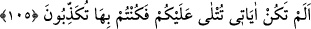
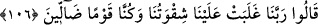
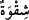
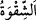
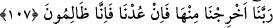
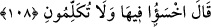

Mâlik b. Dînâr’dan nakledildiğine göre Atabetü’l-gulâm’ın tevbesinin sebebi,
çarşıda tandırdan çıkarılmış bir kelleye rast gelmesiydi. Bu yüzden üç gün üç güce
baygın kaldı.
Bir hadiste şöyle buyrulmuştur: “Ateş onu kızartır, üst dudağı başının ortasına kadar
çekilip toplanır. Alt dudağı ise göbeğine ulaşacak kadar sarkar.”[103]
105. Size âyetlerim okunurdu da, siz onları yalanlardınız değil mi?
Onları azarlamak, kınamak ve uğradıkları azâbı neden hak ettiklerini hatırlatmak için
şöyle denir: “Dünyada “size âyetlerim okunurdu da, siz onları yalanlardınız değil
mi?”
106. Derler ki: Rabbimiz! Azgınlığımız bizi altetti; biz, bir sapıklar topluluğu idik.
O zaman onlar “derler ki: Rabbimiz!” Kendi kötü tercihimizle işlediğimiz
“azgınlığımız bizi altetti;” yâni bizi ele geçirdi. Kendi durumumuz bizi kötü sonuca
düşürdü.
Kurtubî der ki: “Bu ifâdenin mânâsı hakkında söylenenlerin en güzeli şudur:
‘Lezzetlerimiz ve hevâlarımız nefsânî isteklerimiz bize galip geldi.’ Lezzetler ve
hevâlar “
(azgınlık/şekavet)” diye isimlendirilmiştir. Çünkü bunlar insanı ateşe
sürükler. Ebû Türâb şöyle der: “
(azgınlık)” nefsi/kendisi hakkında hüsn-i zan,
halk hakkında sû-i zan beslemektir.”
“biz,” bu yüzden “bir sapıklar” haktan sapanlar “topluluğu idik.” İşte bu yüzden
yalanladık ve diğer günahları işledik.
107. Rabbimiz! Bizi buradan çıkar. Eğer bir daha (ettiklerimize) dönersek, artık
belli ki biz zalim insanlarız.
“Rabbimiz! Bizi buradan çıkar. Eğer bir daha (ettiklerimize) dönersek, artık belli ki
biz zalim insanlarız.” Kendilerimize zulümde haddi aşan kimseleriz.